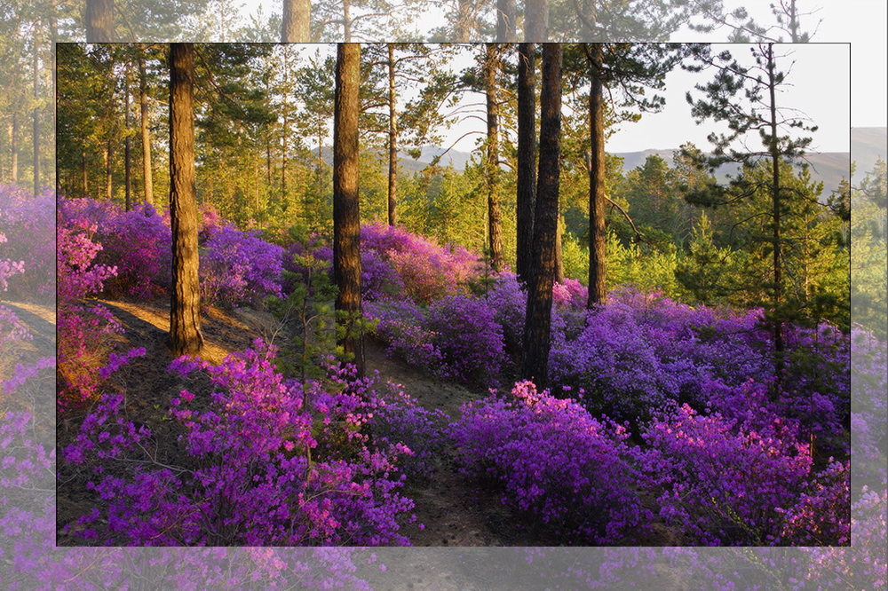

ПРИРОДА
Есть любопытная легенда о сотворении Приморского края. Когда Господь создавал этот мир, то совершенно позабыл про Приморье и вспомнил о нём только на седьмой день. Тогда он собрал то, что осталось от других земель, и бросил в одном месте. Действительно, в Приморском крае всё перемешано: фауна и флора тропических и северных стран, практически все полезные ископаемые и разнообразные виды ландшафтов. Природа края осталась в первозданном виде с древних времён. Всё благодаря тому, что горы Сихотэ-Алинь защитили Приморье от ледников.
Рельеф области в основном горный, только пятая часть края приходится на долины. В состав региона входят небольшие, но уникальные по красоте острова Японского моря: Аскольд, Попова, Большой Пелис, Русский, Рикорда, Путятина, Рейнеке.
Туристам в Приморском крае предлагают не только путешествия по суше, но и морские прогулки. Особую популярность набирает сапсёрфинг. Самые востребованные маршруты пролегают у маяка Басаргина, в бухте Парис, у острова Елены, на мысе Тобизина.
В лесах региона произрастают не только привычные берёза, ольха, пихта, лиственница, ель, кедр, но и монгольский дуб, корейская сосна, маньчжурский клён и даже абрикосы. Здесь много краснокнижных, а также лекарственных растений, таких как китайский лимонник, элеутерококк и всемирно известный женьшень. Символом Приморского края также является Рододендрон даурский,занесенный в красную книгу . Он известен своими яркими розово-фиолетовыми цветами, которые появляются ранней весной, до распускания листьев, на сухих склонах сопок, в хвойных лесах. Когда он расцветает сопки похожи на розово-фиолетовые поля.
В дебрях тайги можно встретить опасного и прекрасного хищника — уссурийского тигра. Также здесь живут леопарды, бурые и чёрные медведи, пятнистые олени, невообразимое количество белок, змей, мышей и ежей.
